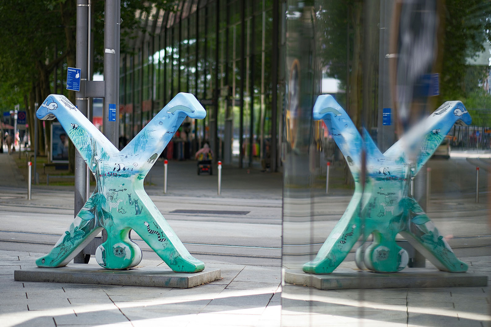
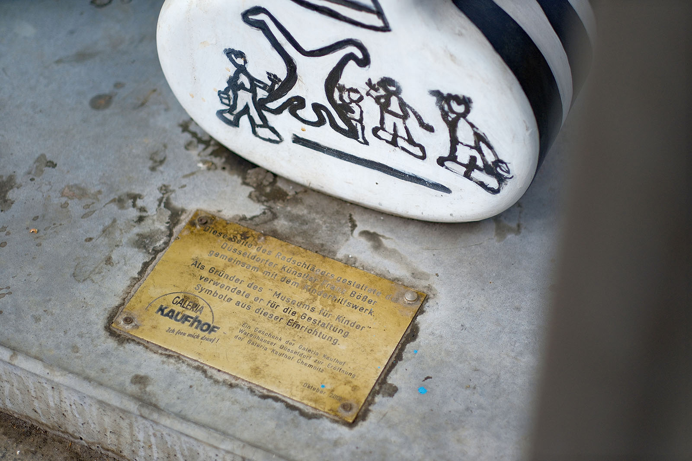
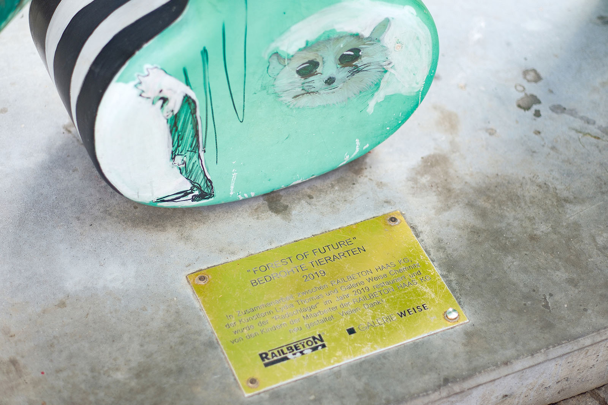
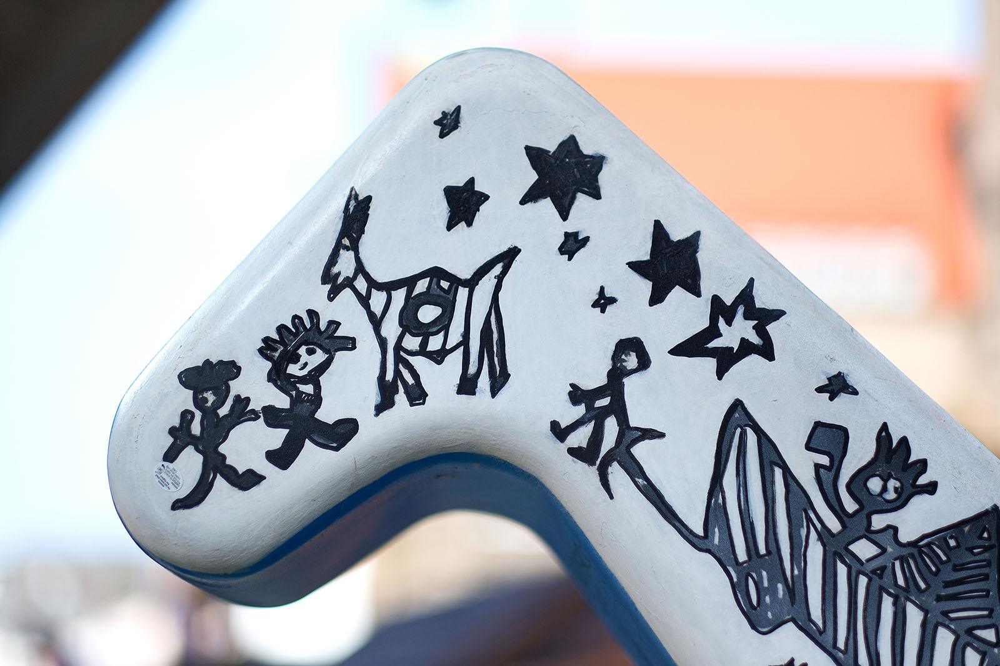
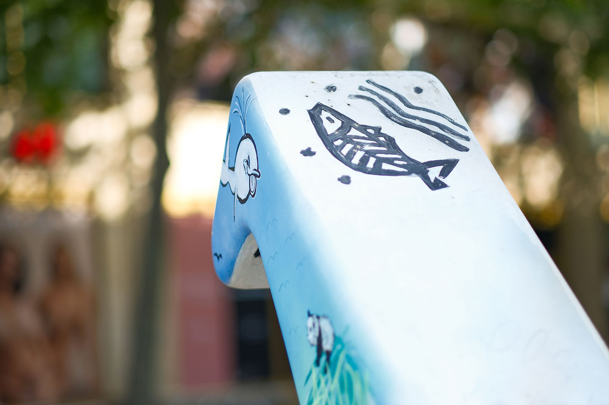
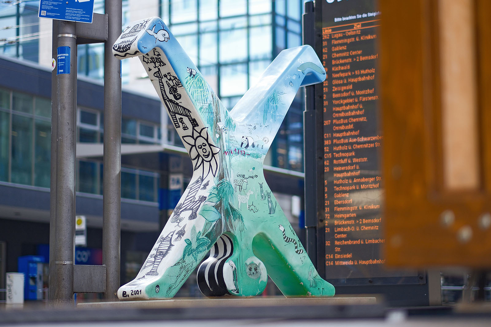

Radschläger
Recherche und Werkbeschreibung: Roman Pilz. Fotografien: Frank Krüger. Text und Bild wechseln sich wie in einem Magazin ab. Ein Klick auf ein Bild öffnet die Großansicht.
Die mittlerweile zum Markenzeichen der nordrhein-westfälischen Landeshauptstadt Düsseldorf gewordene Figur des "Radschlägers" wurde in dieser Form erstmals 1958 vom Goldschmied und Künstler Friedrich Becker (1922-1997) als Kettenglied der Amtskette des Oberbürgermeisters geschaffen. In größerer Gestalt wurde sie 1960 als Türgriff an der St. Lambertuskirche und um 1995 als Skulptur umgesetzt. Die symmetrische, reduzierte Form ist ähnlich wie bei einem Piktogramm gestaltet. Sie zeigt die in Düsseldorf legendäre Figur des Radschlägers auf dem Kopf, mitten beim Überschlag, mit den Händen auf dem Boden und den Füßen in der Luft.
Lydia Thomas wurde 1987 in Karl-Marx-Stadt (heute: Chemnitz) geboren. Thomas studierte von 2009 bis 2015 an der Akademie der Bildenden Künste München bei Prof. Anke Doberauer, deren Meisterschülerin sie 2014 wurde.
Ein Erasmus-Stipendium ermöglichte ihr ein Auslandssemester an der Akademie der Künste in Lissabon. Die Arbeiten der Künstlerin werden seit 2012 regelmäßig ausgestellt. Ein Atelierstipendium der Stadt Chemnitz führte sie 2013 in der Partnerstadt Tampere (Finnland).
Die Künstlerin arbeitet heute als freiberufliche Malerin und Grafikerin in Chemnitz.
Die Düsseldorfer Lokal-Sage begründet die Geschichte mal mit der Verleihung der Stadtrechte im späten Mittelalter oder mit der selbstlosen Hilfestellung eines Kindes aus dem Volke, das, als das Rad einer fürstlichen Kutsche brach, selbst als menschliches "Rad" aushalf. In späteren Zeiten, als die Industrialisierung Wohlstand, aber auch Armut in die Stadt brachte, bettelten Kinder häufig radschlagend um ein Almosen. Im Andenken daran werden bei volkstümlichen Festen heute noch Kinder als Radschläger eingesetzt.
Der Entwurf von Becker erhielt im Jahr 2001 eine besondere Aufmerksamkeit. Die Witwe des Künstlers genehmigte für das von der Stadt Düsseldorf organisierte, karitative Projekt "Radschläger-Kunst" die Herstellung von etwa 100 zwei Meter großen Kunststofffiguren. Die Rohlinge der Figuren wurden von Künstlern und Laien gestaltet und im gesamten Stadtraum temporär aufgestellt. Anschließend wurden die Werke zugunsten einer Kinderhilfeeinrichtung versteigert.

Die nach Chemnitz geschenkte Version wurde auf einer Seite vom Düsseldorfer Künstler Franz Karl Bößer (1934-2003) gestaltet. Der Beuys-Schüler setzte das Konzept der "Sozialen Plastik" konsequent um und brachte als Sozialpädagoge besonders Kinder mit in seine Arbeit ein. 1976 eröffnete er im städtischen Kinderhilfezentrum beispielsweise das Werkhaus, das Kunst als therapeutisches Mittel in die soziale Arbeit integriert. Sein "Museum der Kinder" trägt seine Gedanken in den musealen Raum, wo ihm Kinder die symbolischen Kinder- und Tierformen lieferten, die auf dem Chemnitzer Radschläger in Schwarz auf weißem Grund spielen.

Die Plastik wurde der Stadt 2001 zum Anlass der Eröffnung des Galeria Kaufhof von den Düsseldorfer Filialen des Warenhaus-Unternehmens geschenkt. Als Zeichen der Zusammenarbeit der beiden Partnerstädte wurde die andere Seite des Kunstwerks Anfang 2002 unter Anleitung der Künstlerin Dagmar Ranft-Schinke (*1944) mit 12 fünf- bis sechsjährigen Kindern aus der Kita "Regenbogen" gestaltet. Die Kinder malten bunte Motive zum Thema "Zirkus der Tiere". Im Juli 2002 wurde die Plastik dann feierlich auf dem Neumarkt aufgestellt. Auch in Chemnitz wurde die Figur zum beliebten Treffpunkt und Fotomotiv.

2019 wurde der Radschläger restauriert und die "Chemnitzer" Seite grundlegend neu gestaltet. Diesmal waren es drei Kinder von Mitarbeitern des Chemnitzer Unternehmens Railbeton, die das von der Chemnitzer Malerin Lydia Thomas (*1987) entwickelte Thema "Forest for Future" gemeinsam mit der Künstlerin umsetzten. Der farbig in leuchtendem Grün und Blau gestaltete Untergrund wurde vom Thomas mit rankenden Pflanzen aus dem Urwald bemalt und die Kinder ergänzten bedrohte Tiere, wie beispielsweise Wale, Pandas und Nashörner.

Die Firma Railbeton beteiligte sich finanziell an der Sanierung des Sockels, auf dem das Kunstwerk montiert ist. Seit 2020 steht das Kunstwerk wieder an seinem ursprünglichen Ort.

Ein Kinder-Kollektiv-Kunstwerk
Der Düsseldorfer „Radschläger“ (2001) nach einem Entwurf von Friedrich Becker, bemalt von Kindern unter der Leitung von Franz Karl Bößer (2001), Dagmar Ranft-Schinke (2002) und Lydia Thomas (2019)
